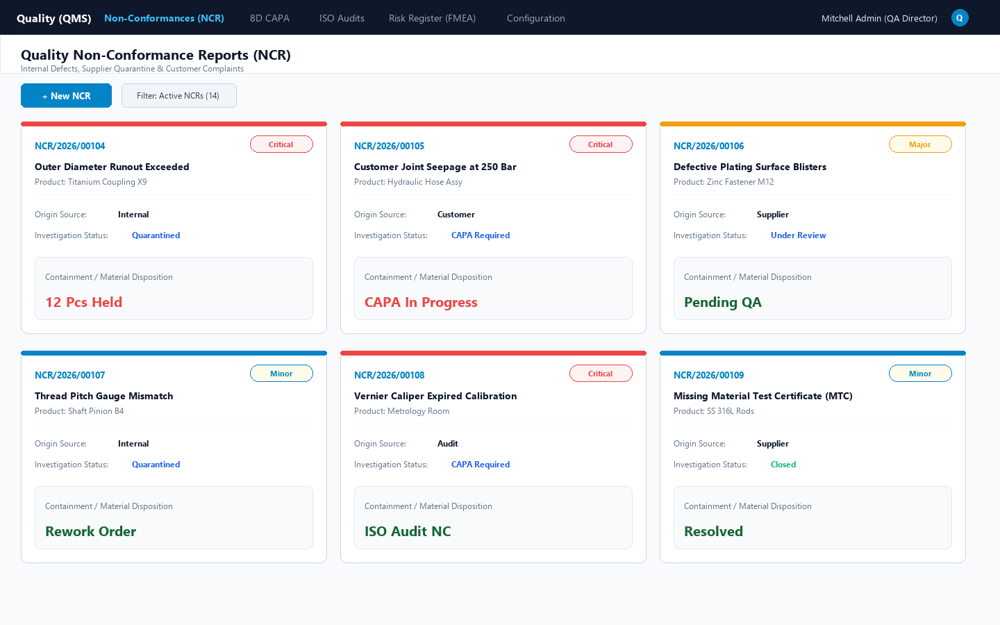
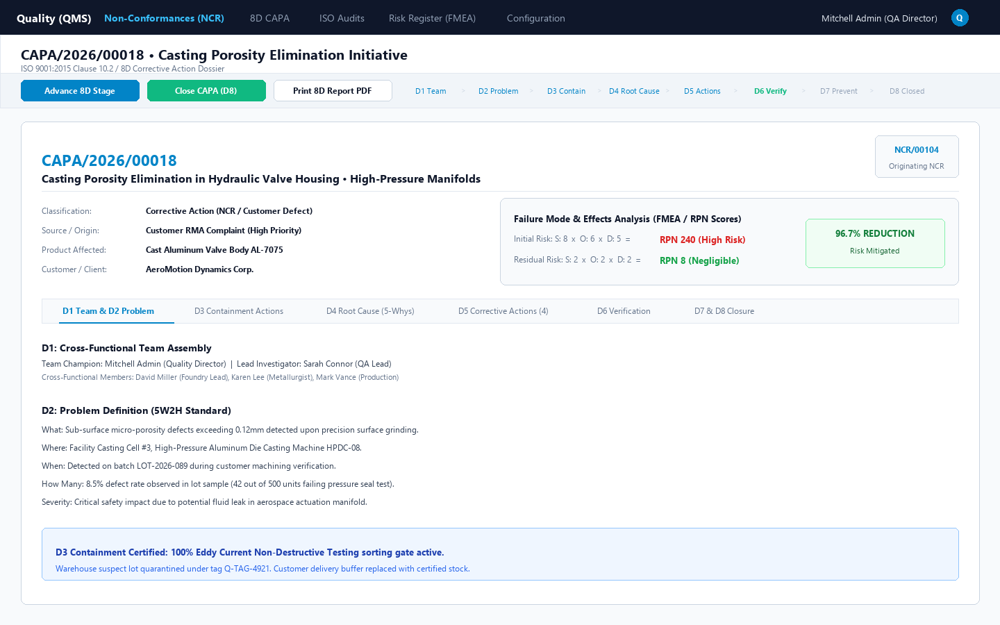
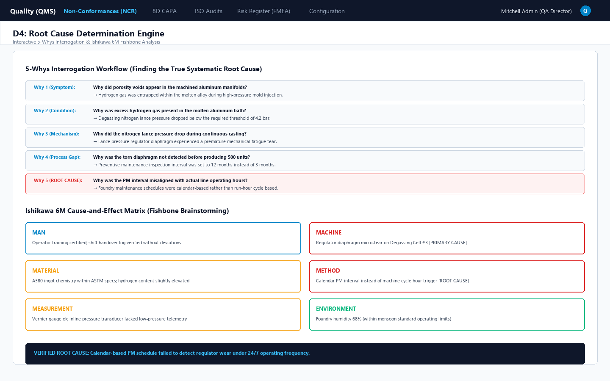
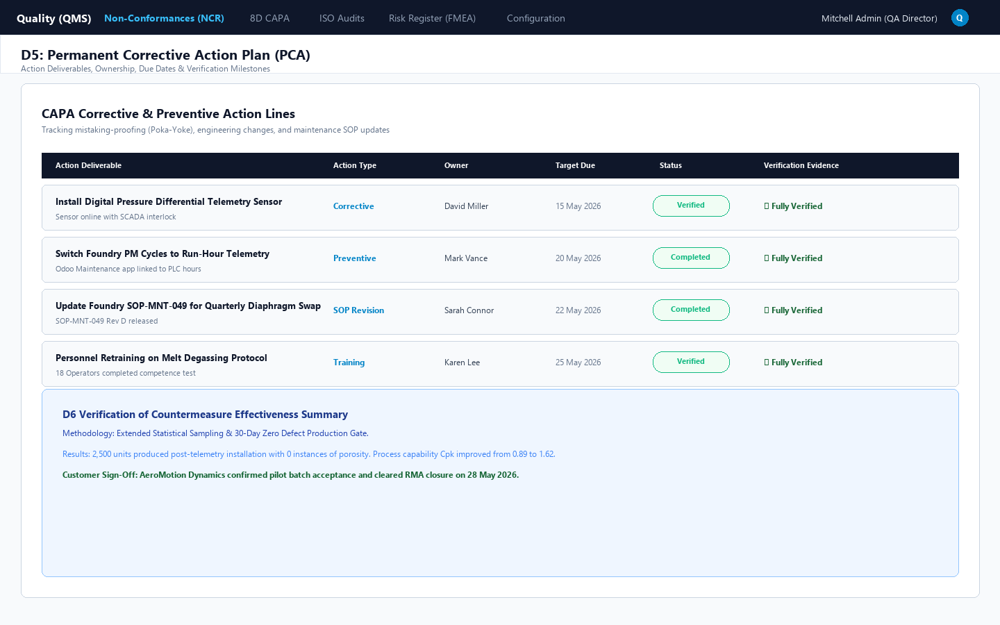
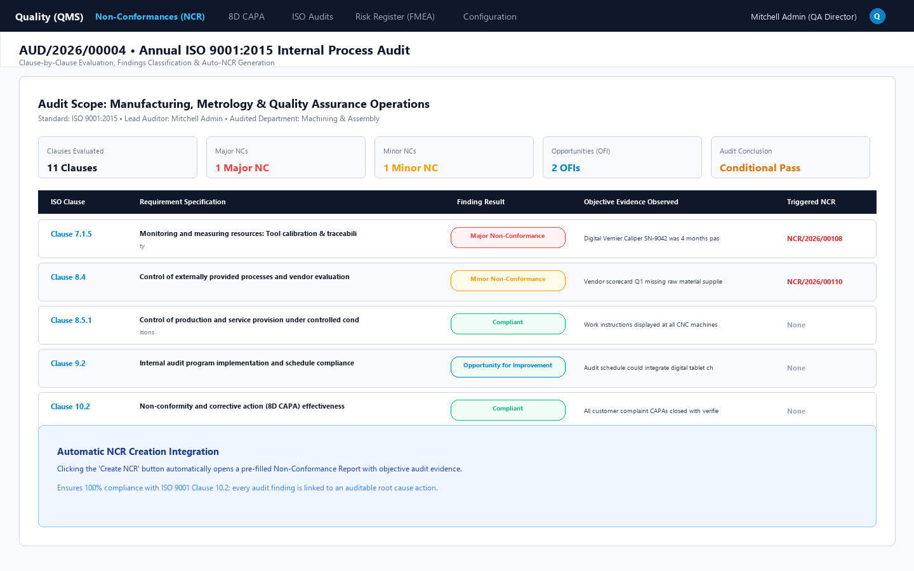
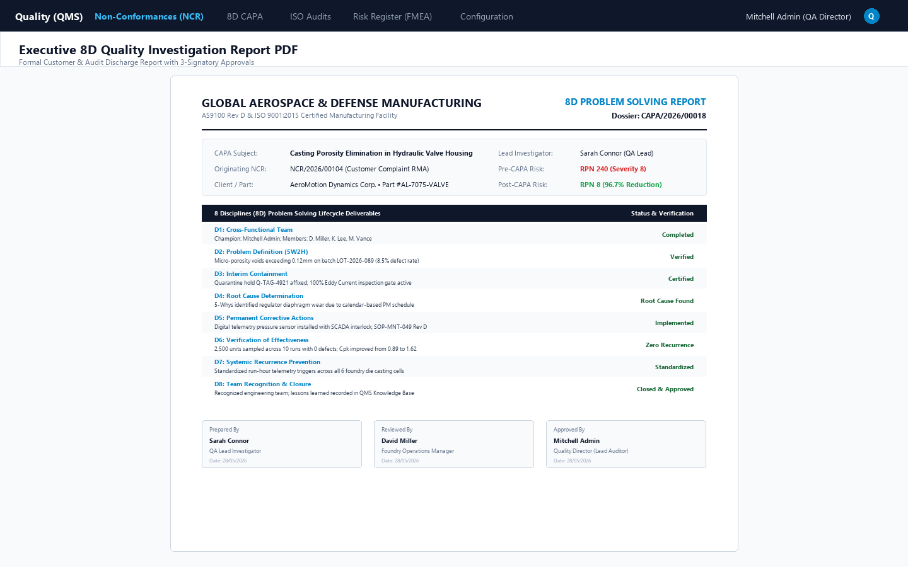

Complete Quality Assurance Suite for Odoo Community: Tri-Source Non-Conformance Reports (NCR), 8 Disciplines (8D) Problem Solving, 5-Whys, Ishikawa Fishbone, FMEA Risk Scoring, and ISO Internal Audits.
Manufacturing, aerospace, medical device, and food processing companies must maintain strict compliance with ISO 9001:2015 Clause 10.2 (Corrective Actions) and Clause 6.1 (Risk Assessment). In standard Odoo Community, there is no system to log Non-Conformance Reports (NCRs), quarantine suspect stock, execute 8 Disciplines (8D) investigations, analyze root causes through 5-Whys or Ishikawa Fishbone diagrams, or conduct scheduled internal audits. ISO Quality Management System (QMS & CAPA Hub) brings enterprise-grade quality control natively into Odoo Community, seamlessly connecting your receipts, production work orders, sales complaints, and audits.
A unified quality platform engineered for aerospace, automotive, precision manufacturing, and regulated industries
Capture internal manufacturing defects, supplier incoming shipment rejects, and customer RMA complaints. Track severity (Minor, Major, Critical), affected lots, and quarantine locations.
Standardized 8 Disciplines workflow: D1 Team Assembly, D2 5W2H Problem Statement, D3 Containment, D4 Root Cause, D5 Action Plan, D6 Verification, D7 Prevention, and D8 Closure.
Structured questionnaire guiding teams to uncover fundamental systemic failures rather than superficial symptoms, integrated with Man, Machine, Material, Method, Measurement, and Milieu analysis.
Failure Mode and Effects Analysis scoring (Severity x Occurrence x Detection). Quantifies Initial RPN vs. Post-Mitigation Residual RPN to prove risk mitigation to ISO lead auditors.
Pre-loaded ISO 9001:2015 audit checklist with 1-click clause evaluation. Classify findings into Major NC, Minor NC, or Observation, and auto-generate linked NCRs directly from findings.
Generate formal printable 8D Investigation Report PDFs with corporate headers, complete D1-D8 summaries, FMEA risk reduction stats, and 3 signatory approval blocks.
Engineered with strict compliance ergonomics for Quality Assurance Engineers, Plant Managers, and Compliance Auditors
Monitor defect progression from Draft > Under Review > Quarantined > CAPA In Progress > Resolved. Color-coded severity badges alert quality teams to Critical vs Minor incidents in real-time.

Structured notebook tabs covering D1 Team Assembly, D2 Problem Definition, D3 Containment, D4 Root Cause Analysis, D5 Permanent Corrective Actions, D6 Verification, D7 Prevention, and D8 Closure.

Built-in root cause exploration tool. Drills down through 5 levels of 'Why' combined with Ishikawa categories (Man, Machine, Material, Method, Measurement, Milieu) to identify true root causes.

Assign task owners, deadlines, action types (Corrective vs Preventive), and track implementation status (Draft > In Progress > Completed > Verified) to ensure accountability.

Schedule internal audits with lead auditors, load standard ISO clauses with 1-click, evaluate compliance status, record objective evidence, and auto-generate linked NCRs directly from findings.

Official printable report featuring executive corporate headers, complete D1 to D8 investigation summaries, FMEA risk reduction percentages, and 3 signatory authorization blocks.

Follow this end-to-end testing workflow to evaluate all core features right after installation
Navigate to Quality (QMS) > Non-Conformances > Non-Conformance Reports (NCR) > New (or open any incoming stock receipt and click the Quality NCR smart button). Choose a source (e.g., Internal Production or Supplier Defect), pick the product, enter rejected quantities, and select Severity (e.g. Major). Click Submit for QA Review.
On the NCR form, enter the Immediate Containment Action (e.g., Affixed physical red quarantine tags; paused machining line) and select the material disposition (e.g., Scrap or Rework). Click Quarantine Defective Stock. The NCR state updates to Quarantined & Contained.
On the quarantined NCR, click Initiate 8D CAPA. The system generates a linked Corrective & Preventive Action record (qms.capa), pre-populating the product, vendor/customer, problem statement, and containment notes. The NCR status updates to CAPA In Progress.
Open the generated CAPA. Set the Initial FMEA numbers (e.g. S:8, O:6, D:5 = RPN 240). Advance through stages: D1 Team Assembly > D2 Problem Definition > D3 Containment > D4 Root Cause. In the D4 tab, complete the 5-Whys questionnaire down to Why 5 and populate the Ishikawa 6M categories. Enter the root cause synthesis determination.
Advance to stage D5: Corrective Actions. In the action lines table, add permanent corrective actions (e.g. Install pressure sensor with SCADA interlock, Update SOP-MNT-049). Assign owners and due dates. Click Start, then Complete, and Verify on each line item.
Advance to D6 Verification. Enter effectiveness proof (e.g., Zero defects across 2,500 units sampled). Input the Residual FMEA values (e.g. S:2, O:2, D:2 = RPN 8). Notice the 96.7% Risk Reduction badge! Advance to D7 Prevention, update SOP ref, and click Close CAPA (D8). Notice that the linked NCR is automatically resolved!
Navigate to Quality (QMS) > Audits & Checklists > ISO Quality Audits > New. Click Load ISO 9001:2015 Checklist to populate standard clauses. On any finding, click Create NCR to observe auto-generation. Finally, return to your closed CAPA and click Print > 8D Quality Investigation Report to review the formatted 3-signatory PDF!
| QMS Capability | Standard Odoo Community | ISO Quality QMS Hub |
|---|---|---|
| Non-Conformance Reports (NCR) | ✗ No dedicated NCR models | ✓ Tri-source (Internal, Supplier, Customer) |
| Defective Material Quarantine Workflow | ✗ Manual inventory adjustments | ✓ Formal quarantine hold & disposition (Scrap/Rework) |
| 8D Problem Solving Methodology | ✗ Not supported | ✓ Full D1 to D8 lifecycle stages |
| 5-Whys & Ishikawa 6M Fishbone Tools | ✗ External spreadsheets | ✓ Built-in interactive questionnaire & fishbone categories |
| FMEA Risk Priority Numbers (RPN) | ✗ No risk quantification | ✓ Initial vs Residual RPN & reduction % metrics |
| ISO Process Audits & Checklists | ✗ Not available | ✓ Pre-loaded ISO 9001 clauses with 1-click NCR trigger |
| Printable Executive 8D Report PDF | ✗ No report available | ✓ Formal customer & auditor discharge certificate |
Our team of certified Odoo technical architects provides free installation guidance, version upgrades, and tailored QMS integrations for automotive (IATF 16949), aerospace (AS9100), medical device (ISO 13485), and pharmaceutical manufacturing.